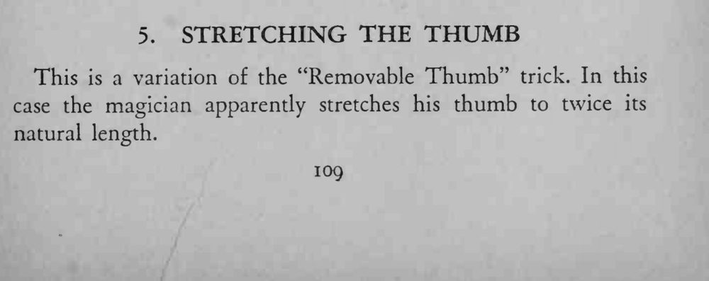
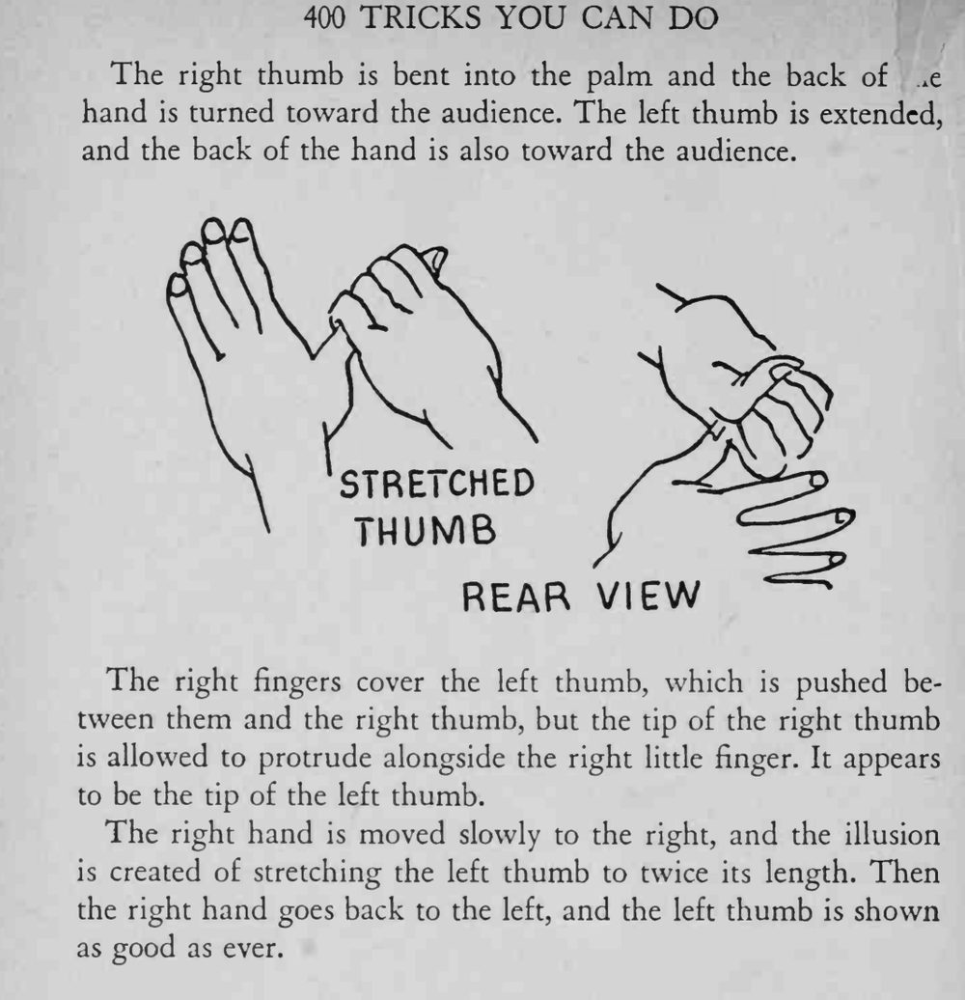

魔术师把左手拇指慢慢往旁边拉，拇指竟被拉长到原来的两倍，随后一松手又恢复原样。
右手拇指指尖要刚好露在小指旁边，位置差一点就会穿帮。


This is a variation of the "Removable Thumb" trick. In this case the magician apparently stretches his thumb to twice its natural length. The right thumb is bent into the palm and the back of *e hand is turned toward the audience. The left thumb is extended, and the back of the hand is also toward the audience. The right fingers cover the left thumb, which is pushed between them and the right thumb, but the tip of the right thumb is allowed to protrude alongside the right little finger. It appears to be the tip of the left thumb. The right hand is moved slowly to the right, and the illusion is created of stretching the left thumb to twice its length. Then the right hand goes back to the left, and the left thumb is shown as good as ever.